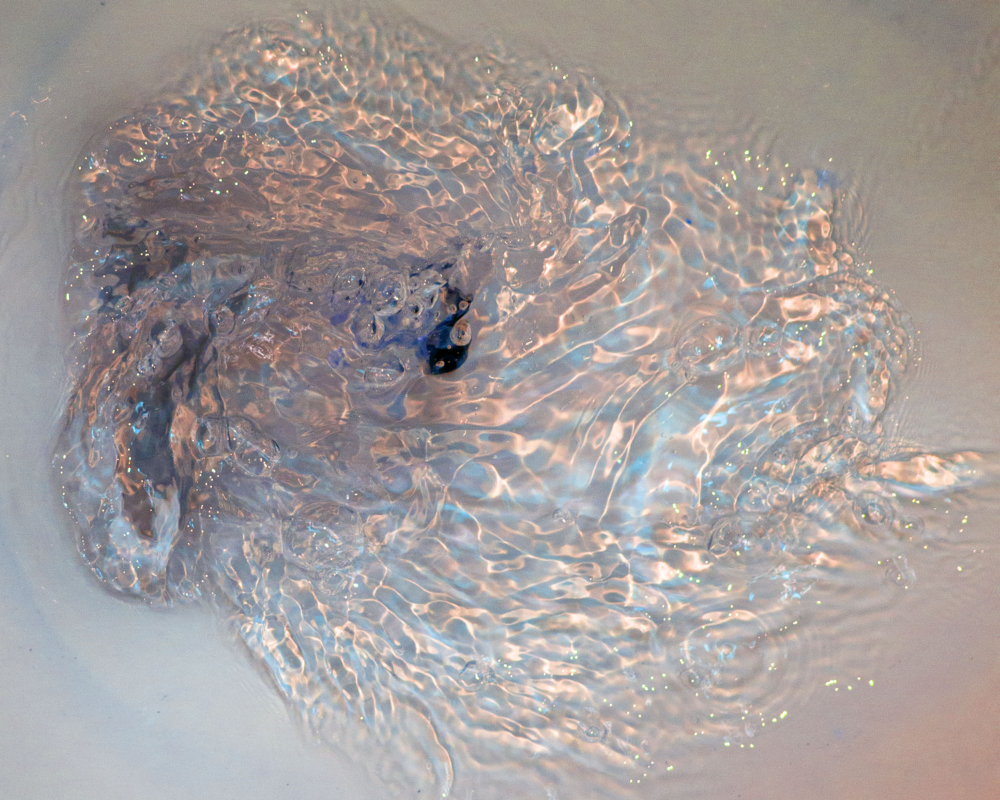

Another perilous feature of Bathroom is the Flush. Cold water flows around the North Side of the continent and spills into the bay, mixing with warm water and creating strong currents that occasionally cause a whirlpool to form in the bay known as The Flush. Weathermen have gotten better at predicting these whirlpools, but most people stay clear of the bay if they can help it.